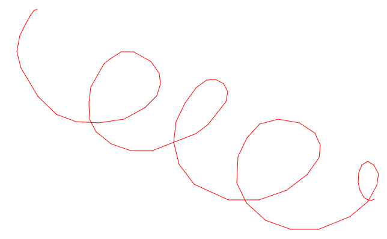
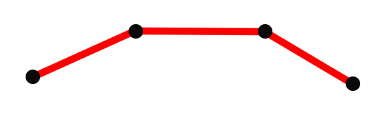
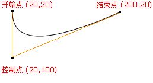
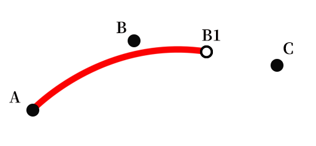
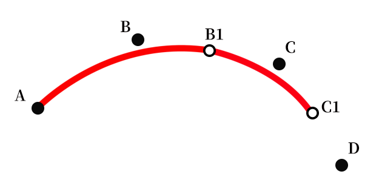
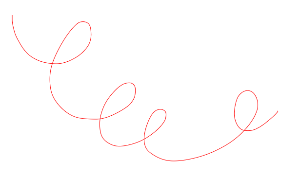
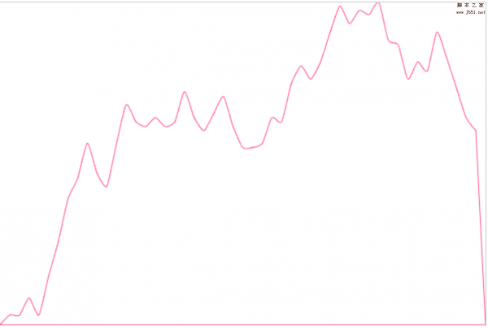

canvas进阶之如何画出平滑的曲线
背景概要
相信大家平时在学习canvas 或 项目开发中使用canvas的时候应该都遇到过这样的需求：实现一个可以书写的画板小工具。
嗯，相信这对canvas使用较熟的童鞋来说仅仅只是几十行代码就可以搞掂的事情，以下demo就是一个再也简单不过的例子了：
1 2 3 4 5 6 7 8 9 10 11 12 13 14 15 16 17 18 19 20 21 22 23 24 25 26 27 28 29 30 31 32 33 34 35 36 37 38 39 40 41 42 43 44 45 46 47 48 49 50 51 52 53 54 55 56 57 58 59 60 61 62 63 64 65 66 67 68 | <!DOCTYPE html><html><head> <title>Sketchpad demo</title> <style type="text/css"> canvas { border: 1px blue solid; } </style></head><body> <canvas id="canvas" width="800" height="500"></canvas> <script type="text/javascript"> let isDown = false; let beginPoint = null; const canvas = document.querySelector('#canvas'); const ctx = canvas.getContext('2d'); // 设置线条颜色 ctx.strokeStyle = 'red'; ctx.lineWidth = 1; ctx.lineJoin = 'round'; ctx.lineCap = 'round'; canvas.addEventListener('mousedown', down, false); canvas.addEventListener('mousemove', move, false); canvas.addEventListener('mouseup', up, false); canvas.addEventListener('mouseout', up, false); function down(evt) { isDown = true; beginPoint = getPos(evt); } function move(evt) { if (!isDown) return; const endPoint = getPos(evt); drawLine(beginPoint, endPoint); beginPoint = endPoint; } function up(evt) { if (!isDown) return; const endPoint = getPos(evt); drawLine(beginPoint, endPoint); beginPoint = null; isDown = false; } function getPos(evt) { return { x: evt.clientX, y: evt.clientY } } function drawLine(beginPoint, endPoint) { ctx.beginPath(); ctx.moveTo(beginPoint.x, beginPoint.y); ctx.lineTo(endPoint.x, endPoint.y); ctx.stroke(); ctx.closePath(); } </script></body></html> |
它的实现逻辑也很简单：
- 我们在canvas画布上主要监听了三个事件：
mousedown、mouseup和mousemove，同时我们也创建了一个isDown变量； - 当用户按下鼠标（
mousedown，即起笔）时将isDown置为true，而放下鼠标（mouseup）的时候将它置为false，这样做的好处就是可以判断用户当前是否处于绘画状态； - 通过
mousemove事件不断采集鼠标经过的坐标点，当且仅当isDown为true（即处于书写状态）时将当前的点通过canvas的lineTo方法与前面的点进行连接、绘制；
通过以上几个步骤我们就可以实现基本的画板功能了，然而事情并没那么简单，仔细的童鞋也许会发现一个很严重的问题――通过这种方式画出来的线条存在锯齿，不够平滑，而且你画得越快，折线感越强。表现如下图所示：

为什么会这样呢？
问题分析
出现该现象的原因主要是：
我们是以canvas的lineTo方法连接点的，连接相邻两点的是条直线，非曲线，因此通过这种方式绘制出来的是条折线；

受限于浏览器对mousemove事件的采集频率，大家都知道在mousemove时，浏览器是每隔一小段时间去采集当前鼠标的坐标的，因此鼠标移动的越快，采集的两个临近点的距离就越远，故“折线感越明显“；
如何才能画出平滑的曲线?
要画出平滑的曲线，其实也是有方法的，lineTo靠不住那我们可以采用canvas的另一个绘图API――quadraticCurveTo ，它用于绘制二次贝塞尔曲线。
二次贝塞尔曲线
quadraticCurveTo(cp1x, cp1y, x, y)
调用quadraticCurveTo方法需要四个参数，cp1x、cp1y描述的是控制点，而x、y则是曲线的终点：

更多详细的信息可移步MDN
既然要使用贝塞尔曲线，很显然我们的数据是不够用的，要完整描述一个二次贝塞尔曲线，我们需要：起始点、控制点和终点，这些数据怎么来呢？
有一个很巧妙的算法可以帮助我们获取这些信息
获取二次贝塞尔关键点的算法
这个算法并不难理解，这里我直接举例子吧：
假设我们在一次绘画中共采集到6个鼠标坐标，分别是A, B, C, D, E, F；取前面的A, B, C三点，计算出B和C的中点B1，以A为起点，B为控制点，B1为终点，利用quadraticCurveTo绘制一条二次贝塞尔曲线线段；

接下来，计算得出C与D点的中点C1，以B1为起点、C为控制点、C1为终点继续绘制曲线；

依次类推不断绘制下去，当到最后一个点F时，则以D和E的中点D1为起点，以E为控制点，F为终点结束贝塞尔曲线。
OK，算法就是这样，那我们基于该算法再对现有代码进行一次升级改造：
1 2 3 4 5 6 7 8 9 10 11 12 13 14 15 16 17 18 19 20 21 22 23 24 25 26 27 28 29 30 31 32 33 34 35 36 37 38 39 40 41 42 43 44 45 46 47 48 49 50 51 52 53 54 55 56 57 58 59 60 61 62 63 64 65 66 67 68 69 70 71 72 | let isDown = false;let points = [];let beginPoint = null;const canvas = document.querySelector('#canvas');const ctx = canvas.getContext('2d');// 设置线条颜色ctx.strokeStyle = 'red';ctx.lineWidth = 1;ctx.lineJoin = 'round';ctx.lineCap = 'round';canvas.addEventListener('mousedown', down, false);canvas.addEventListener('mousemove', move, false);canvas.addEventListener('mouseup', up, false);canvas.addEventListener('mouseout', up, false);function down(evt) { isDown = true; const { x, y } = getPos(evt); points.push({x, y}); beginPoint = {x, y};}function move(evt) { if (!isDown) return; const { x, y } = getPos(evt); points.push({x, y}); if (points.length > 3) { const lastTwoPoints = points.slice(-2); const controlPoint = lastTwoPoints[0]; const endPoint = { x: (lastTwoPoints[0].x + lastTwoPoints[1].x) / 2, y: (lastTwoPoints[0].y + lastTwoPoints[1].y) / 2, } drawLine(beginPoint, controlPoint, endPoint); beginPoint = endPoint; }}function up(evt) { if (!isDown) return; const { x, y } = getPos(evt); points.push({x, y}); if (points.length > 3) { const lastTwoPoints = points.slice(-2); const controlPoint = lastTwoPoints[0]; const endPoint = lastTwoPoints[1]; drawLine(beginPoint, controlPoint, endPoint); } beginPoint = null; isDown = false; points = [];}function getPos(evt) { return { x: evt.clientX, y: evt.clientY }}function drawLine(beginPoint, controlPoint, endPoint) { ctx.beginPath(); ctx.moveTo(beginPoint.x, beginPoint.y); ctx.quadraticCurveTo(controlPoint.x, controlPoint.y, endPoint.x, endPoint.y); ctx.stroke(); ctx.closePath();} |
在原有的基础上，我们创建了一个变量points用于保存之前mousemove事件中鼠标经过的点，根据该算法可知要绘制二次贝塞尔曲线起码需要3个点以上，因此我们只有在points中的点数大于3时才开始绘制。接下来的处理就跟该算法一毛一样了，这里不再赘述。
代码更新后我们的曲线也变得平滑了许多，如下图所示：

本文到这里就结束了，希望大家在canvas画板中“画”得愉快~我们下次再见：）
感兴趣的童鞋可戳这里关注我的博客，任何新鲜好玩的博文将会第一时间分享到这儿哦~
以上就是本文的全部内容，希望对大家的学习有所帮助，也希望大家多多支持脚本之家。

微信公众号搜索 “ 脚本之家 ” ，选择关注
程序猿的那些事、送书等活动等着你
相关文章
- 这篇文章主要介绍了基于canvas使用贝塞尔曲线平滑拟合折线段的方法的相关资料，小编觉得挺不错的，现在分享给大家，也给大家做个参考。一起跟随小编过来看看吧2018-01-10


最新评论